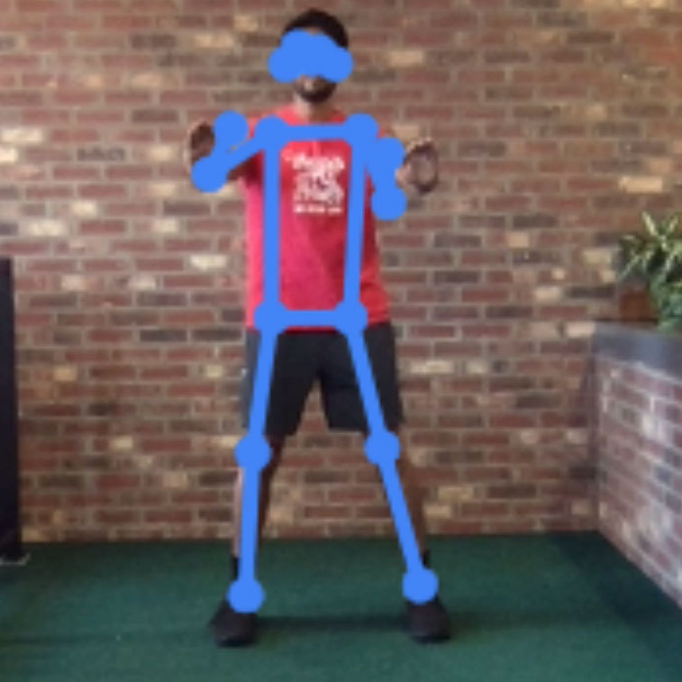
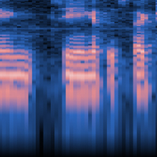

Image Project
Teach based on image, from files or your webcam.
Explore This

Pose Project
Teach based on image, from files or your webcam.
Explore This

Voice Project
Teach based on one-second-long sounds, from files or your microphone.
Explore This